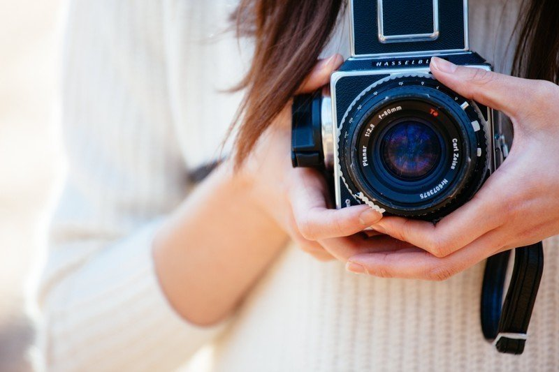

私は昔から笑うのが苦手だった。
「お姉ちゃんってほんと笑顔苦手だよね」
双子の妹には、よくそう言われた。私たち姉妹は顔こそ似ているものの、やはり表情というのは人の印象を大きく左右するもので、家族写真では妹の笑顔の方が断然輝いていた。
私は昔からどうしても作り笑いができなかった。それはカメラの前だけでなく、人の中にいても変わらなかった。なんで楽しくもないのに笑わなきゃならないんだ、という思いがいつも頑なにさせた。
対して妹は何事にも器用で愛想がよく、男女問わず周りから人気があった。そんな妹の姿を見て育ったためか、徐々に本の虫になって周りとほとんど会話をしない人間になり、自分の殻に閉じこもるようになった。一方妹はバドミントンを幼少期からやっており、のちに文武両道の道を辿ることになる。
「あなたたち顔は可愛いのに、どうしてこんなにも違うのかしらね。やっぱり笑顔かしら」
母は私たちの写真を見るたびによくこんなことを言った。可愛いというのは母のひいき目があると思っていたけれど、振り返ってみるとやっぱり私たちは可愛かったのだと思う。
その証拠に、私たちはよく男子から告白された。私の場合どうしたらいいか分からず、ぶしつけに断っていたのに対して、妹は、相手を傷つけないように最大限配慮していた。それが更に人気を押し上げていた。妹はモテることを鼻にかけることなく、なお性格もいいと評判になったのである。
月日は経ち、私たち双子は同じ大学に入学した。性格は違えど、学力というものはほとんど違わなかったらしい。大学は実家から近いこともあり、そこに決めたのだった。
学部もサークルも異なっていて、同じ大学といえども偶然食堂で会う位のものだった。私は法学部だったが、文学好きが高じてか文芸部に入り、読むだけでなく文を書くことで何かを伝えることの楽しさをそこで見つけた。そして、同じ文芸部の男の子に恋をした。
最初は外見や性格ではなく、彼が書く小説に恋をしたのだった。なんて心に響く小説を書くのだろうと。彼の小説を読んでいる時は、心の底から笑顔になれた。
徐々に彼に興味が湧き、慣れない口調でよく話しかけた。周りからしてみると、不愛想な女が積極的に話しかけている様は何とも気味の悪い光景だったろうが、私には関係のないことだった。彼はつまらない話題にも丁寧に答えてくれた。話の幅も広げてくれた。でも、中々交際には発展しなかった。
進展のない状態が少しずつもどかしくなっていった。もういっそのこと、こちらから告白してみようかとも思っていた。しかし、その心配はいらなかった。私は文芸部の部室で、ある事実を聞いてしまったのだから。
いつものミーティング終わりのこと。文芸誌発行前で、ゆるい雰囲気の部室がピリピリとしていた。それはこの時期ではよくあることだが、でもやはり雰囲気としては楽しくなかった。そんな時、ある文芸部の男子部員が周りを盛り上げようと、唐突に全体に向けて大きな声を出した。
「はーい、みんな注目！ 実はこいつから報告があります」
そう指差された男子部員こそ、好きな彼だった。
「おい、やめろよ」
彼は顔を赤くして拒否反応を示していたが、もう後には戻れない。みんな原稿チェックや表紙のレイアウト決めで忙しいながらも、彼の発表に耳を澄ます体勢になっており、事態は既に巻き戻せない状態だった。彼は数秒した後、腹をくくった様子でみんなの前に出るとこう言った。
「実は昨日、彼女ができました」
一瞬みんな凍りついたが、すぐに誰かが「おめでとう」と叫ぶと、さっきまでの部室の雰囲気が嘘みたいになり、一気にお祝いムードになった。なんて言葉をかければいいのだろう。そんな放心状態の私に更に追い打ちをかける事実が飛び出した。
それは、その彼女が私の妹だということだった。文学部である妹と彼は同じゼミだったようだ。
私は改めて妹に嫉妬した。心から羨ましく思った。でも争う気はなかった。妹だったら諦めよう。それが遅すぎる初恋の相手で、心から笑い合えると確信できる相手であったとしても。
その夜、私はこのやり場のない思いを小説にした。その小説はいつも以上に心の感情を吐露したものとなり、のちに無理を言って文芸誌に載せてもらえることにもなった。
気持ちが伝わらなくても、思いを乗せた物語が彼に届けばそれでいい。そう思った。
しかし、二人はほどなくして別れた。それを後輩の文芸部員から聞いた。理由は分からない。でも、彼が妹に振られたことだけは確かなようであった。
その直後、彼は大学を卒業して就職するというレールをただ歩むのはごめんだという理由で大学を突然中退した。風の噂では小説家を目指して、どこか遠い街に引っ越したらしい。
彼が姿を消し、妹は変わっていった。妹は彼と別れた後、何度も別の男と付き合っては振った。それは以前のような相手への配慮などはなく、彷徨う獣のようにも感じた。私はそんな妹が本当に心配だった。
姉は昔からあまり笑わなかった。
わたしたち双子は顔こそ似ているものの、性格は全くと言っていいほど異なっていた。
わたしは周りに流されやすいタイプで、笑いたくもない所でよく笑った。その方が物事がスムーズに進むから。しかも愛想笑いが妙に得意だった。だから周りの人たちは愛想のいい子どもだと思って、わたしを可愛いがった。
それに対し、姉はどこか芯となるものがあった。しかしそれは、世の中的には扱いづらいもので、大人からも必要以上に話しかけられることがなかった。
でも、姉はわたしにはよく笑顔を見せた。
「わたしの前では笑えるのに、なんでほかでは笑えないの？」
幼い頃、そんなことを訊いた覚えがある。
「私の笑顔はそれほど貴重だってこと」
そう答えた顔は今でも忘れられない。
高校卒業後、わたしたちは同じ大学に進学したが、大学内でほとんど会うことはなかった。私はバドミントンサークルに所属し、お互い実家暮らしだったが徐々に話すことすらなくなってしまった。
でも、わたしたちはある人物を通じて間接的に繋がりを持っていた。それはわたしと同じゼミで、尚且つ姉と同じ文芸部である男子だ。彼はもの静かなタイプで、普段は色恋に興味のなさそうな顔をしていた。
ある日、彼から告白された。
「好きです。付き合ってください」
ゼミ終わりにその言葉を受け、内心驚いた。なぜならそれまであまり話したことがなかったから。
「あの……なんでわたしなの？」
そう訊くと、彼は少し考えた。彼は決して文学チックな言葉ではなく、とてもシンプルな言葉で返した。
「好きに理由はありません」
その時、なぜか姉と通じる不器用でありのままの気持ちを感じた。わたしはその場で告白を受け入れた。
しかし、関係はうまくいかなかった。彼の心に迷いがあったから。その迷いとは、わたしか姉か、という迷いだった。わたしに告白した後、文芸部誌に載った姉の小説を読んで、彼は強烈に姉に惹かれたようだった。純粋な彼だからこそ打ち明けてくれたことだった。
でも、どうしても受け入れることのできないことだった。彼にはわたしだけ見ていて欲しかった。
「ごめんなさい。わたしたち別れましょう」
それ以来、姉の幻影に追われるような日々を送るようになった。そうさせたのは、彼がわたしと姉を好きになったという事実だった。
わたしたち姉妹はどこか似ている。でもわたしは姉とは違うはずだ。いつの間にか、そんな姉に対するつまらない対抗心が渦巻いていた。心のどこかで不器用な姉の生き方を見下していたからなのかもしれない。
だから、わたしは姉にはない愛想のよさと笑顔でたくさんの男と関係を持った。それは姉には到底できないことだった。しかし、そんなことを続けても、自分のアイデンティティを守るどころか、周りも自分も傷つけていた。それに一番傷つけていたのは、ほかでもない姉だった。姉は無愛想ながらも気遣う言葉を何度もかけたが、当時のわたしには何も響かなかった。
突然姉が姿を消したのは、ちょうどその頃だった。友人たちとともに冬山の登山に出かけたが遭難し、姉だけ帰らぬ人となった。
姉の葬式には多くの人が来た。それはわたしのように浅く広い関係の繋がりではなく、姉の不器用さを知り、そのすべてを受け入れていた人たちばかりだった。
わたしは今まで、こんなに他人に心を開いたことがあっただろうか。その時、初めて心から姉に嫉妬した。姉を羨ましく思った。と同時に、激しく後悔した。姉の本当の笑顔を奪ったのは間違いなくわたしだった。
姉の死から中々立ち直ることができなかったある日、新人文学賞を受賞し、文壇デビューしていた彼と運命的な再会をした。それはひょんなことからで、姉がチャンスを再び与えてくれたのだと信じて疑わなかった。
姉の訃報を伝えると、彼は静かに涙した。
その数日後、わたしは彼にプロポーズされた。そのプロポーズは、決して迷うことのない、そして今後も変わることのない、力強い言葉だった。
「姉の分まで愛してね」
冗談混じりにそう言うと、彼は苦笑いしつつも頷いた。
そうこうするうちにわたしは実家を出て、彼が住む街へと引っ越した。
のちにわたしたちは結婚した。
まもなくわたしの中に新たな命が宿った。その子は素敵な笑顔を世界中にふりまいて、みんなを笑顔にした。
姉の死から2年後。
彼がある夜、1編の小説を手渡した。彼は何も言わない。
「あなたの作品？」
「いいから読んでみてよ」
そう言って、彼は我が子を抱っこしたまま部屋から出ていく。
わたしはその小説を読み始めた。心にいつかのぬくもりを感じる。そして、少しずつ暖かくなっていく。いつの間にか涙が止まらなくなった。姉妹愛について書かれたその物語は、姉が送った最後のメッセージだった。
「幸せになってね」
姉の声が聴こえた気がした。わたしは姉に何ができただろう。
月日はあっという間に過ぎ去っていく。
結婚して5年が経とうとしていた頃。久しぶりに実家に帰ったわたしと彼は、父母とともに食事をとった。昔よく囲んでいたテーブルに家族は座り、ささやかで幸せな時間を送った。
「ねえ！ 写真撮ろうよ」
食事も一段落したところで、いたずら盛りの我が子が、家にあるインスタントカメラを見つけて提案する。そうしようかと彼がそれに乗り、両親も穏やかに頷いた。そしてタイマーをセットし、5人で写真を撮った。
「やったやった！ ばっちり撮れてるよ」
現像された写真を真っ先に手に取り、我が子が騒いだ。
「みんないい笑顔！ でも、いちばん笑顔なこの人はだあれ？」
最初何を言っているのか分からなかったが、その写真を見ると、わたしたち5人のほかに1人懐かしい顔があった。遠慮がちに一番端で写っている。
けれどもその人は、ありのままの温かい笑顔でレンズを見つめていたのだった。